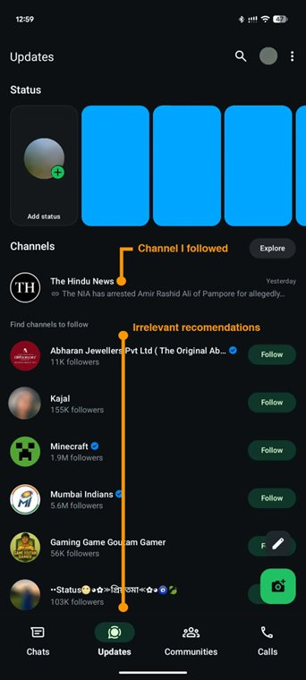
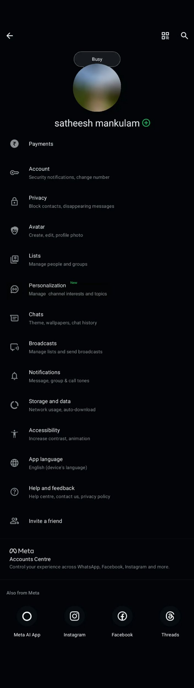
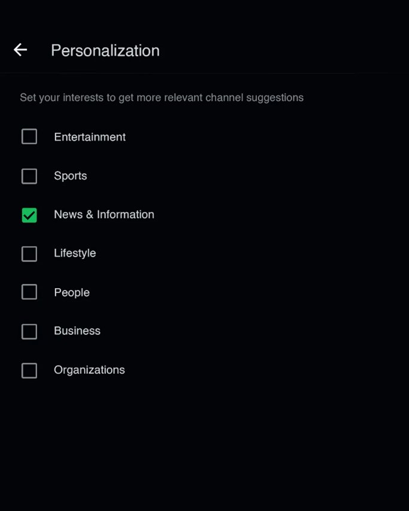
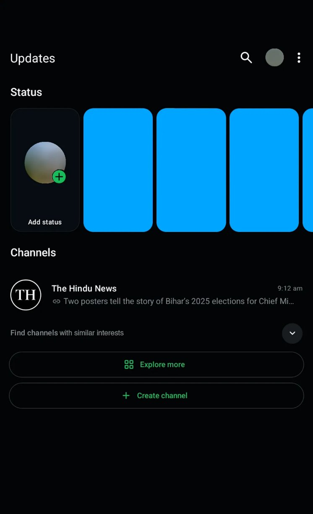

When WhatsApp introduced Channels, I was genuinely excited. The launch video, curated examples — a place to follow useful updates without cluttering chats.
For a few days, it worked exactly as expected. I followed a handful of meaningful channels: news, Government info.
Then something changed.
The Friction
Every time I opened the Updates tab, WhatsApp kept pushing random, irrelevant channels into my view — entertainment gossip, meme pages, local spam, topics I never showed interest in.

One channel I followed. Below it — Minecraft, Mumbai Indians, a jewellery store, a gaming creator. None of which I ever showed interest in.
My excitement started fading.
Instead of feeling personal, the experience felt forced.
The more irrelevant suggestions I saw, the more frustrated I became.
The irony — When I finally unfollowed all channels, boom, every recommendation disappeared, a caret and an Explore more and Create channel options appeared.
This inconsistency made the experience feel even more confusing and unintuitive.
The Realisation
"Why can't WhatsApp let me control what I want to see?"
A simple preference filter, or even a tiny caret to expand/collapse recommendations (when we are already following some channels), could have prevented this annoyance.
Nothing complex. Just:
The fix — user agency in 3 lines
- "Show more recommendations"
- "Hide"
- "Choose my interests"
Small touches. But powerful for user trust and comfort.
The Solution

A Personalization setting with a "New" badge — a gentle nudge to set your channel interests before recommendations start showing up.

Interest selection screen — simple checkboxes. Only one is checked: News & Information. Channels recommended based on this.

A caret to expand/collapse "Find channels with similar interests" — visible only when you're already following channels. No surprise recommendations.
Conclusion
It wasn't the Channels feature that "completely" failed.
It was the lack of personalization and agency in the discovery experience. And user intent can be different.
This sparked a thought:
How often do products focus on pushing content instead of respecting user intent?
WhatsApp could turn a frustrating moment into a delightful one by embracing a simple principle:
Let users lead their own content journey.
The best discovery is the one the user chose — not the one the algorithm assumed.